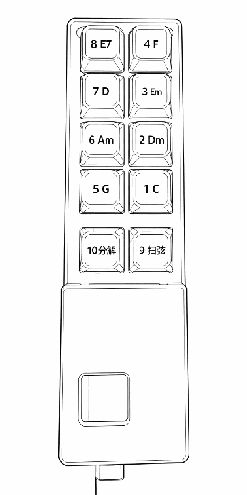

吉他连好，APP启动。默认自动和弦模式下，按 1-8 号键即可弹出对应和弦。
按一下 10 号键切换到分解和弦模式。此模式下，按一下 C 键，会连续弹出 4 个音符（两拍）；如按住 C 不放，会连续弹出 8 个音符（4 拍）。
按一下 9 号键切换到扫弦模式。此模式下，按一下 C 键，会弹出 2 拍扫弦；如按住 C 不放，会弹出 4 拍扫弦。

和弦按键 1-8 与模式切换键 9、10
从和弦模式切到单音模式，再按一次切回和弦模式。
测试区，可不用理会。
对照图上和弦即可弹奏。
谱上一个和弦标记一般是 2 拍。
《小星星》《兰花草》《半壶纱》伴奏曲谱
加客服微信，获取所需更多曲谱、材料、升级包等。
获取曲谱、升级服务、技术支持
也欢迎扫码添加，查看视频号详细使用方法